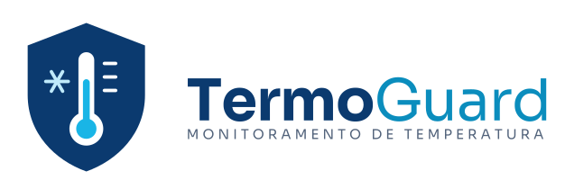

TermoGuard
Sensores que vigiam o seu frio 24 horas por dia e avisam na hora em que algo dá errado, para você não
perder estoque
A TermoGuard protege o seu estoque, mesmo quando você não está por perto. Sensores simples nos freezers,
geladeiras e câmaras frias medem a temperatura o tempo todo e avisam você no celular, na hora em que
algo
sai do
limite ideal. Assim, você evita perder mercadoria, conserva os produtos corretamente e mantém as normas
sanitárias em dia, com um histórico de temperaturas sempre à mão. Ideal para mercados, restaurantes,
farmácias,
laboratórios e pequenos negócios.

+ Sobre
Para proteger sua mercadoria nao precisa ser caro muito menos complicado
A termoguard esta aqui com a solução para ajudar o seu comercio, sendo restaurante, farmacia ou
laboratorio. Para pequeno e medios negócios, mantendo o frio sob o controle comerciante, mesmo
quando
ninguem esta perto.
O problema:
Um freezer da defeito durante a noite, ou no fim de semana onde nao teria ninguém por perto, podendo
estragar toda a mercadoria, muitas das vezes so e descoberto o defeito quando e tarde demais.
- Perda de mercadoria
- Risco de vender produtos fora da temperatura ideal
- Dificuldade de comprovar a temperatura em fiscalizacoes
A solução:
com a TermoGuard o seu frio e vigiado 24 horas por dia, com sensores simples, e de facil instalação
em seus freezers, geladeiras e câmaras frias, enviadando dados para um painel online, se sair algo
dos padroes estabelecidos pelo comerciante, voce recebera um alerta em seus dispositivos.
- Monitoramento 24 Horas
- Alertas no momento que algo da errado
- Acesso livre a historicos de temperaturas dos aparelhos
Quero proteger meu estoque